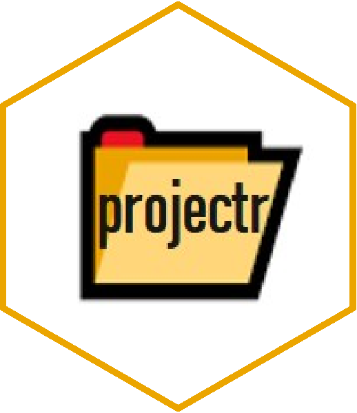

projectr 
Overview
The projectr package is designed to be a lightweight package, with the single goal of taking away the hassle of creating the right folder structure for any data science project. With the boilerplate being provided, any project can be customized or enhanced to special needs and requirements.
The resulting folder structure is inspired by Coockiecutter Data Science and Edward Ma’s blogpost on managing your data science project early on. Further adjustments were made based on feedback by the data science community.
Installation
You can install the development version from GitHub with:
# install.packages("devtools")
remotes::install_github("Jeniffen/projectr")Usage
projectr::set_me_up("my_project")
#> Your project has been successfully created!
#> Find below an outline of your structure:
#>
#> my_project # This is your project root
#> ¦
#> +-- data # Root folder for data
#> ¦ +-- 01_raw # Folder for all your raw data
#> ¦ +-- 02_intermediate # Folder for pre-processed data
#> ¦ +-- 03_processed # Folder for fully processed data
#> ¦ +-- 04_predictions # Folder to save predictions
#> ¦
#> +-- model # Folder to store all your models
#> ¦
#> +-- notebooks # Root folder for notebooks and Rmd files
#> ¦ +-- eda # Folder for exploratory data analysis
#> ¦ +-- misc # Folder to try things out or stuff
#> ¦
#> +-- references # Root folder for all explanatory files
#> ¦ +-- codebooks # Folder for codebooks of your datasets
#> ¦ +-- docs # Folder for general documentation
#> ¦ ¦ +-- figures # Folder to store figure and images
#> ¦ +-- reports # Folder to store visualizations and reports
#> ¦
#> +-- src # Root folder for all your scripts
#> +-- 01_preparation # Folder for setup and prep. scripts
#> +-- 02_processing # Folder for all kind of processing scripts
#> +-- 03_modelling # Folder for all your training scripts
#> +-- 04_visualization # Folder for all your visualisation scripts
#>
#> Good luck!Code of Conduct
Please note that the projectr project is released with a Contributor Code of Conduct. By contributing to this project, you agree to abide by its terms.